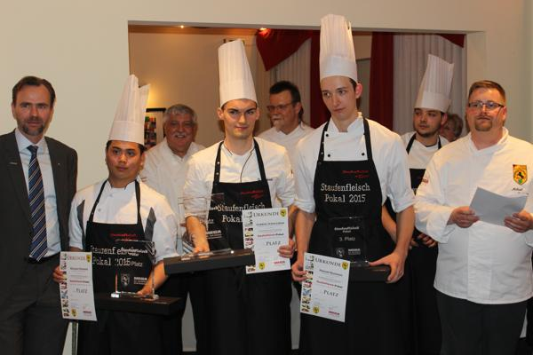
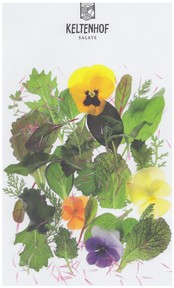

Kochverein Stuttgart 1890 e.V. 2015
Siegerehrung
Am 13.März 2015 startete im IB am Wallgraben in Stuttgart zum zweiten Male der Wettbewerb
"StaufenFleisch-Pokal"
Wir gratulieren den Teilnehmerinnen und Teilnehmern zu den Platzierungen
und wünschen für die anstehende Abschlussprüfung,
sowie die persönliche und berufliche Zukunft viel Erfolg.
Teilnehmer des StaufenFleisch-Pokal:
von links:
Robert Stauder, Speisemeisterei, Stuttgart-Hohenheim
Aysun Ayvaz, DORMERO Hotel, Stuttgart-Möhringen
Wesarat Rohwer, MARITIM Hotel, Stuttgart
Gabriel Schallmeir, Oettinger's Restaurant, Fellbach-Schmiden
Philipp Blessing, Colombi Hotel, Freiburg
Benedikt Fluhrer, Krehl's Linde, Stuttgart-Bad Cannstatt
Sven Voigt, Il Boccone, Ludwigsburg
Lena Wunder, Villa Hammerschmiede, Pfinztal
VSR-Servicewettbewerb:
Flambieren, eindecken und servieren am Tisch
Teilnehmer des VSR-Servicewettbewerb:

von links:
Mona Wirth, Hotel Erbprinz, Ettlingen
Sonja Brittinger, Hotel Erbprinz, Ettlingen
Natascha Woschitz, Wald-& Schlosshotel, Friedrichsruhe
Janina Feiner, Casino am Neckar, Tübingen
Janina Walisko, Hotel Bareiss, Baiersbronn
Julia Sailer, Alpenhof Murnau
Julia-Kristin Pöllmann, Hotel Bareiss, Baiersbronn
Die beiden Sieger aus den Wettbewerben:
StaufenFleisch-Pokal 2015
von links: Thomas Goerke, Vorsitzender VSR
1.Sieger Köche:Gabriel Schallmeir, Oettinger's Restaurant, Fellbach-Schmiden
1.Siegerin Service: Mona Wirth, Hotel Erbprinz, Ettlingen
Michael Viehmann, Vorsitzender Kochverein Stuttgart 1890 e.V.
Die Jury von links:
Martin Öxle, Küchenmeister
Michael Klein, Küchenmeister, Stellv. Jugendleiter
Alexander Neubert, Deutscher Jugendmeisterr
Nikolaos Antonakakis, Küchenmeister
Ansprechpartenr für die Jugend: Pascal Metzler, Jugendleiter
Siegerehrung Staufen-Fleisch-Pokal-2015
Herr Klaiber von der MEGA Stuttgart begrüßte die Gäste zum
zweiten "StaufenFleisch-Pokal" in Stuttgart und erklärte die
Pflicht-Lebensmittel "StaufenFleisch-Färse, Bürgermeisterstück" und
"Stauferico-Salchichone".
Da ihm die Jugend ein Anliegen ist, beteilige sich die MEGA an der Fortbildung
und wünschte sich weiterhin eine lange und gute Zusammenarbeit mit dem
Kochverein Stuttgart 1890 e.V.
Er erläutert kurz den Werdegang des Stauferico-Schweines (näheres auch unten)
und die Genossenschaft MEGA.
Die MEGA hat nicht nur die Lebensmittel zur Verfügung gestellt
sondern dazu auch einheitliche Schürzen für die Azubis von Küche und Service.
Rolf Stech vom IB-Hotel erhielt für die langjährige Bereitschaft in seiner Küche die
Jugendwettbewerbe auszutragen, die Goldene Ehrennadel des Kochverein Stutggart 1890 e.V..
Ein großer Dank geht auch an die beiden verantwortlichen
Herr Njie vom Service und Herr Stoye in der Küche,
die uns ebenfalls schon jahrelang unterstützen.
Gewinner des Pokals 2015

1.Gabriel Schallmeir, Oettinger's Restaurant, Fellbach-Schmiden
2. Wesarat Rohwer, MARITIM Hotel, Stuttgart
3. Philipp Blessing, Colombi Hotel, Freiburg
Alle anderen Teilnehmer kamen auf den vierten Platz.
_______________________________________________________________________________von links: Robert Stauder, Speisemeisterei, Stuttgart-Hohenheim
Aysun Ayvaz, DORMERO Hotel, Stuttgart-Möhringen
2. Wesarat Rohwer, 1.Gabriel Schallmeir, 3. Philipp Blessing
Benedikt Fluhrer, Krehl's Linde, Stuttgart-Bad Cannstatt
Sven Voigt, Il Boccone, Ludwigsburg
Lena Wunder, Villa Hammerschmiede, Pfinztal
Als Preis für das beste Dessert gab es von Herr Manz,
Schuldirektor der LandesBerufsSchule in Bad Überkingen
ein Dessertbuch für Sven Voigt.
Unser Vizepräsident Karl Haaf war als Gast beim Wettbewerb und hat zusammen mit Michael Viehmann
die VKD-Auszeichnung qualifizierter Ausbildungsbetrieb an das Mövenpick-Hotel am Flughafen verliehen.
Herr Burghardt und Frau Fix nahmen die Auszeichnung entgegen.
Die MEGA Genossenschaft Stuttgart unterstützt uns bei diesem Wettbewerb

MEGA-Seite

Stauferico-Seite
Das Stauferico Schwein.
Es hat heute eine Genreinheit von 99,9% durch Kreuzung aus dem
wertvollen Iberico-Eber und dem StaufenFleisch-Mutterschwein.
Nach einer Aufzuchtzeit von 9 Monaten davon die letzten zwei Monate mit Sonnenblumenschrotfütterung (im Gegensatzt zur Schweinezucht von 4-5 Monaten)
und einen reinen Fleischertrag von nur 35% bei ca. 100 Kg Schlachtgewicht ergibt
sich eine Qualität die in Deutschland einmalig ist und
von der MEGA-Stuttgart vermarktet wird.
Partner beim Staufen-Fleisch-Pokal-2015

Herr Jud vom Collegium Wirtemberg moderierte die
von Ihm ausgesuchten, passenden Weine zum Essen:
Zur Begrüßung:
2012 Collegium Wirtemberg
Secco von der Goldmuskateller Traube
Da schmeckt man die Frucht!
Mit grünem Oxial ein Genuss.
Zur Vorspeise:
2012 Edition Wirtemberg
Weißburgunder trocken
Zum Hauptgang:
2011 Monarchie!
Cuvée Wirtemberg
Rotwein Cuvée trocken
Eine prächige Cuvee von Cabernet-Sauvignon,
Merlot, Lemberger und Spätburgunder in 225 L Barrique-Eichenholzfässern gelagert
der seinen Geschmack am besten nach dekandieren entfaltet.
Zum Dessert:
2012 Uhlbacher Götzenberg Gewürztraminer
Das ausgewogene Frucht-und Säurespiel ist die Kunst des Kellermeisters
im Barrique ausgebaut.
Weitere Partner

Die Teilnehmer VSR-Servierwettbewerb 2014
1.Sieger, Gabriel Schallmeir, Oettinger's Restaurant, Fellbach-Schmiden
2.Sieger, Wesarat Rohwer, MARITIM Hotel, Stuttgart
3.Sieger; Philipp Blessing, Colombi Hotel, Freiburg
Aysun Ayvaz, DORMERO Hotel, Stuttgart-Möhringen
Benedikt Fluhrer, Krehl's Linde, Stuttgart-Bad Cannstatt
Robert Stauder, Speisemeisterei, Schloss Hohenheim Stuttgart
Sven Voigt, Il Boccone, Ludwigsburg
Lena Wunder, Villa Hammerschmiede, Pfinztal

{kind=link}
{kind=link}
{kind=link}
{kind=link}
{kind=link}
{kind=link}
{kind=link}
{kind=link}
{kind=link}
{kind=link}
{kind=link}
{kind=link}
{kind=link}
{kind=link}
{kind=link}
{kind=link}
{kind=link}
{kind=link}
{kind=link}
{kind=link}
{kind=link}
{kind=link}
{kind=link}
{kind=link}
{kind=link}
{kind=link}
{kind=link}
{kind=link}
{kind=link}
{kind=link}
{kind=link}
{kind=link}
{kind=link}
{kind=link}
{kind=link}
{kind=link}
{kind=link}
{kind=link}
{kind=link}
Eingereichte Speisenfolgen
Kochverein Stuttgart 1890 e.V.
Hans-J.Mackesim Verband der Köche Deutschlands
Mitglied im Landesverband Baden Württemberg
„StaufenFleisch“-Pokal am 13. März 2015 im IB Stuttgart
Die Pflichtbestandteile des Wettbewerbs:
Vorspeise:
Forelle, Rote Bete
Wasabi-Rauke
Hauptgang:
StaufenFleisch-Färse Bürgermeisterstück
Stauferico-Salchichone
Regenbogen-Möhren
Dessert:
Quark, Blutorange, Maracuja, essbare Blüten
_______________________________________________________________________________________
1. Sven Voigt, „Il Boccone“, Ludwigsburg
Scheiben von der roten Bete und Elstar-Apfel
Gebratenes Forellenfilet
Rote Bete-Schaum
Arosto di Manzo aus der StaufenFleisch Färse
Gebratene Kräuterseitlinge
Semmelknödel-Stauferico-Salchichone-Auflauf
Glacierte Regenbogenkarotten
Lauwarmer Schokoladenkuchen
Maracuja-Quarkparfait
Blutorangenkompott
________________________________________________________________________________________
2. Philipp Blessing, „Colombi Hotel“, Freiburg
Roh marinierte Forelle mit zweierlei Rote Bete, Wasabi-Rauke und Limetten- Buttermilchschaum
Geschmortes Bürgermeisterstück aus der StaufenFleisch Färse
mit gebratenen Kräuterseitlingen,
Rainbow-Karotten, Pastinakenpüree
und Stauferico-Salchichone- Polenta
Blutorangen- Quarktörtchen
auf weißer Maracuja-Schokoladencrème
mit karamellisierter Ananas und essbaren Blüten
_________________________________________________________________________________________
3. Lena Wunder, „Hotel Villa Hammerschmiede“, Pfinztal
Gebratenes Forellenfilet auf Rote Bete-Carpaccio
mit Kartoffelstroh, Rote Bete-Ingwersud
und Raukensalat
Ragout aus dem Bürgermeisterstück von der StaufenFleisch Färse
mit dreierlei Regenbogenmöhren
und gebratenen Kräuterseitlingen,
Stauferico-Salchichonebrunoise und Tagliatelle
Variation von Grieß und Blutorange
__________________________________________________________________________________________
4. Benedikt Fluhrer, „Krehl´s Linde“, Stuttgart Bad- Cannstatt
Gerollte Forelle auf Rote Bete-Carpaccio
und Wasabi-Rauke Crème fraîche
Geschmortes Bürgermeisterstück von der StaufenFleisch Färse mit Kräuterseitlingen, Rotweinschalotten,
Regenbogen Vichykarotten und Polenta
Blutorangen- Schokoladenmousse
und Maracuja-Quark-Timbal
_________________________________________________________________________________________
5. Gabriel Schallmeir, „Oettinger´s Restaurant“, Fellbach- Schmiden
Warm geräucherte Forelle
mit Apfelcréme, marinierter roter Bete
und Wasabi-Rauke dazu Koriander-Knäckebrot
Bürgermeister Stück von der
StaufenFleisch Färse "Sous Vide"
mit Schalottenjus,
Wurzelgemüse und Kräuterseitlinge
dazu Stauferico-Salchichone Polenta
Quark- Maracuja Schnittchen
mit dunkler Schokolade,
Blüten und Blutorangensorbet
_________________________________________________________________________________________
6. Wesarat Rohwer, „MARITIM Hotel“, Stuttgart
Gebratenes Forellenfilet
mit Rote Beete-Apfel-Terrine
und Wasabi-Rauke
Sanft gegartes Bürgermeisterstück von der StaufenFleisch Färse
mit Stauferico- Salchichone,
frisches Gemüse und Kartoffel-Pastinakenpüree
Ananas-Ravioli gefüllt mit Topfenmousse, Passionsfruchtsauce,
Blutorangenfilets und essbare Blüten
_________________________________________________________________________________________
7. Aysun Ayvaz, „DORMERO Hotel“, Stuttgart Möhringen
Forelle im Wurzelsud pochiert
auf Rote Beete Carpaccio und Wasabi Raucke
an Buttermilchdressing
Bürgermeisterstück" Staufen Zauber"
von der StaufenFleisch Färse
mit Stauferico-Salchichone,
Regenbogen Vichy Möhren und Maisgrießschnitte
Zweierlei Quarkmousse
mit Granita von der Blutorange
_________________________________________________________________________________________
8. Robert Stauder, „Speisemeisterei“, Schloss Hohenheim, Stuttgart
Zweierlei von der Forelle mit Rote Bete
und Meerrettich
Geschmortes Bürgermeisterstück von der StaufenFleisch Färse mit Regenbogen Möhren, Stauferico-Salchichone Grießschnitte
und Kräuterseitlingen
Abgeflämmter Maracuja Flan mit Quark
und Blutorangen Granita
_________________________________________________________________________________________
Vielen Dank an die jungen Köche für die Bereitschaft am StaufenFleisch-Pokal teilzunehmen.
Vielen Dank an die Ausbilder für die Bereitschaft ihre Auszubildenden mit Rat und Zeit
zu unterstützen.
Vielen Dank an die Jury für ihre Bereitschaft hier mit Herz dabei zu sein.
_________________
Sehr geehrte Gäste,
ein herzliches Willkommen zur 39. Stadtmeisterschaft des Kochvereins Stuttgart 1890 e.V.
zum 26 Mal im Team mit dem
Verband der Serviermeister, Restaurant- und Hotelfachkräfte Sektion Stuttgart,
1. Vorstand, Herr Thomas Goerke.
Bei den Teilnehmern von Küche und Service bedanken wir uns für Ihr freiwilliges Engagement.
Vielen Dank an Herrn Rolf Stech als den Verantwortlichen des Hauses IB Hotel für 21 Jahre
Unterstützung der Stadtmeisterschaft, Herrn Stoye als unser Helfer hier in der Küche,
an das gesamte Team des IB Hotel für die freundliche Aufnahme und die Mitarbeit für den
Wettbewerb zum Nutzen unserer Berufs-Jugend.
Unser Jugendleiter Pascal Metzler war der ruhige Pol und Ansprechpartner für die Teilnehmer.
Die Jury: Michael Klein, Küchenmeister, Stellv. Jugendleiter
Martin Öxle, Küchenmeister
Nikolaos Antonakakis, Küchenmeister,
Alexander Neubert, Deutscher Jugendmeister
Wir bedanken uns bei den Sponsoren für die Unterstützung bei der Stadtmeisterschaft:
DANKE
MEGA Stuttgart, Herr Klaiber, Herr Köhrer & Herr Rüger
Obst & Gemüse Wagner Göppingen, Frau & Herr Ladwig
Collegium Wirtemberg, Herrn Kurrle, Herrn Jud
Keltenhof Herrn Daumüller
Friedr. Dick GmbH & Co.Kg, Herrn Leuze und Herr Steudle
Firma " Alles klar" Familie Unsöld
Bei Ihnen bedanken wir uns für Ihr Kommen.
Michael Viehmann
1.Vorsitzender